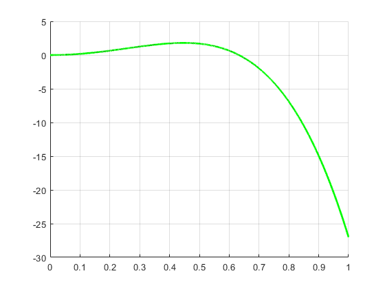
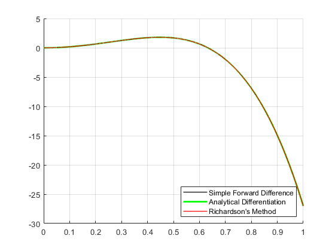
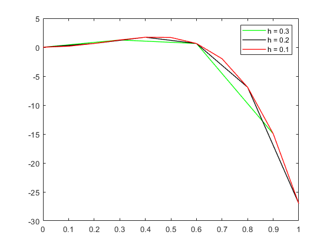

Contents
% This scripts explores numerical errors in context of simple forward % difference numerical differantiation method and Richardson's numerical % differentiation method % % % Author: Serhat Aydogdu % % Task: 4/ETS-3
Note:
Figure 1 is not drawn well in published version.
clear all;
Simple forward difference
f = @(x) -9*x.^5 + 6*x.^3; fd = @(x) -9*5*x.^4 + 18*x.^2; %dif of fx root = 0.8165; h = 1e-4; x = 0:h:1; y = f(x); yd = fd(x); yp = diff(f(x)) / h; figure(1); hold on; grid on; plot(x(2:end),yp, 'k','LineWidth',1,'DisplayName','Simple Forward Difference') plot(x,yd,'g','LineWidth', 2,'DisplayName','Analytical Differentiation')
Richardson's numerical differentiation method
Ric = (f(x+h)-f(x-h))/(2*h); plot(x,Ric,'r','LineWidth',1,'DisplayName',"Richardson's Method") legend('show','Location', 'SouthEast') grid on;
Comparing results
index = find(x==root,1); fprintf('According to Richardson method the derivation of fx where x= 0,8165 is %d \n',Ric(index)) % in richardson's method where x = 0.8165 fprintf('the analytical derivation of fx where x= 0,8165 is %d \n',yd(index)) % in analytical dif. where x = 0.8165 fprintf('According to Simple forward diff method the derivation of fx where x= 0,8165 is %d',yp(index)) % in simple forward dif where x = 0.8165
According to Richardson method the derivation of fx where x= 0,8165 is -8.000235e+00 the analytical derivation of fx where x= 0,8165 is -8.000235e+00 According to Simple forward diff method the derivation of fx where x= 0,8165 is -8.003664e+00
How does the absolute difference depend on the step size h ?
figure(2); grid on; h = 0.3; x = 0:h:1; yd = fd(x); plot(x,yd,'g','LineWidth', 1,'DisplayName','h = 0.3') hold on; h = 0.2; x = 0:h:1; yd = fd(x); plot(x,yd,'k','LineWidth', 1,'DisplayName','h = 0.2') h = 0.1; x = 0:h:1; yd = fd(x); plot(x,yd,'r','LineWidth', 1,'DisplayName','h = 0.1') legend('show')